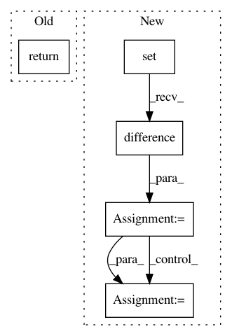

c173309b54984be779728524da100fb46e0ac373,dipy/io/dicomwrappers.py,Wrapper,maybe_same_vol,#Wrapper#Any#,260
Before Change
if not none_or_close(iop1, iop2):
return False
vox1, vox2 = self.voxel_sizes, other.voxel_sizes
return none_or_close(vox1, vox2)
def _scale_data(self, data):
scale = self.get("RescaleSlope", 1)
offset = self.get("RescaleIntercept", 0)
After Change
my_sig = self.vol_match_signature
my_keys = set(my_sig)
your_sig = other.vol_match_signature
your_keys = set(your_sig)
for key in my_keys:
v1, func = my_sig[key]
if key in your_keys:
v2, _ = your_sig[key]
else:
v2 = None
if not func(v1, v2):
return False
for key in your_keys.difference(my_keys):
v1, func = your_sig[key]
if not func(v1, None):
return False
return True
def _scale_data(self, data):
scale = self.get("RescaleSlope", 1)
In pattern: SUPERPATTERN
Frequency: 3
Non-data size: 5
Instances
Project Name: nipy/dipy
Commit Name: c173309b54984be779728524da100fb46e0ac373
Time: 2010-04-14
Author: matthew.brett@gmail.com
File Name: dipy/io/dicomwrappers.py
Class Name: Wrapper
Method Name: maybe_same_vol
Project Name: pantsbuild/pants
Commit Name: a86639e1cb9c9da5bf92810a71232ae0b0ac5845
Time: 2019-02-22
Author: codealchemy@users.noreply.github.com
File Name: src/python/pants/task/task.py
Class Name: TaskBase
Method Name: get_targets
Project Name: uqfoundation/mystic
Commit Name: b94ea9c1429b7c16ebc7f1ee317da933cf052d9e
Time: 2017-07-03
Author: mmckerns@968178ea-60bd-409e-af13-df8a517b6005
File Name: mystic/symbolic.py
Class Name:
Method Name: _solve_zeros